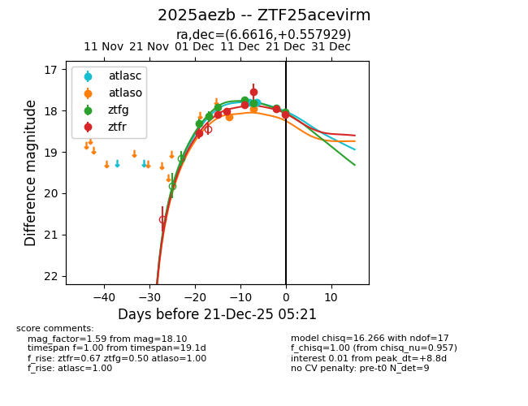
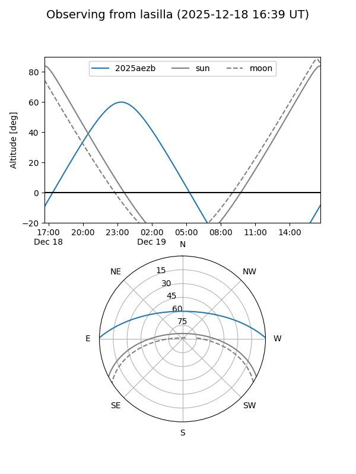
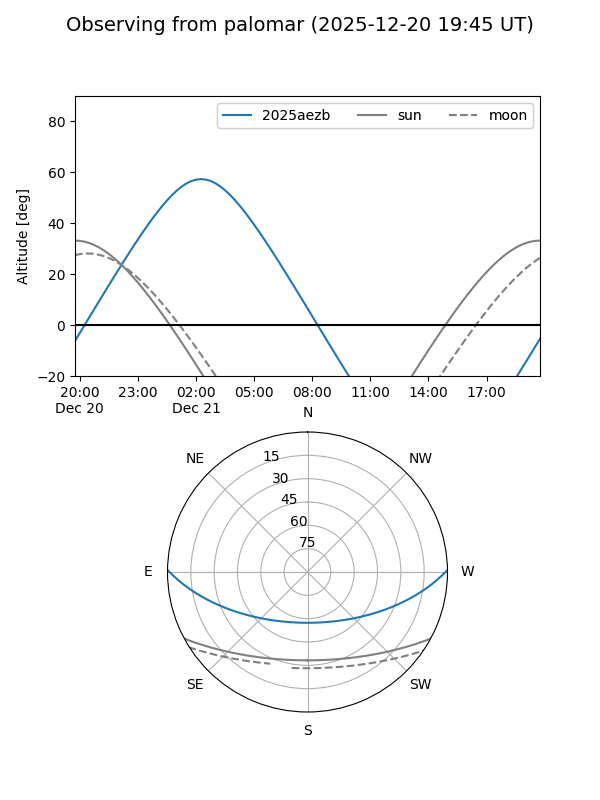
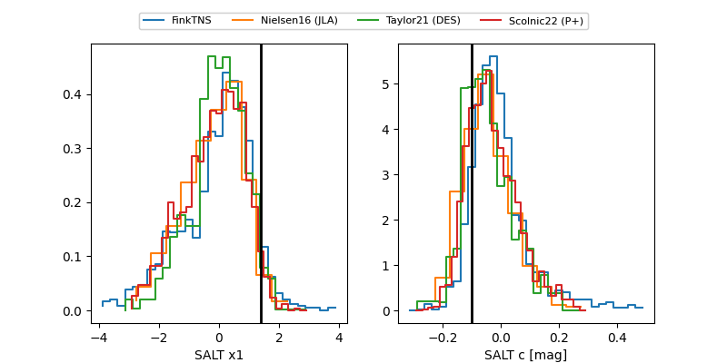

2025aezb
Target 2025aezb at 2025-12-19 05:04
Aliases and brokers:
FINK: fink-portal.org/ZTF25acevirm
Lasair: lasair-ztf.lsst.ac.uk/objects/ZTF25acevirm
ALeRCE: alerce.online/object/ZTF25acevirm
TNS: wis-tns.org/object/2025aezb
YSE: ziggy.ucolick.org/yse/transient_detail/2025aezb
alt names
ZTF25acevirm (ztf,fink_ztf)
2025aezb (tns,yse)
Coordinates:
equatorial (ra, dec) = 6.6616,+0.55793
equatorial (HMS+DMS) = 00:26:38.78,+00:33:28.54
galactic (l, b) = (109.7784,-61.67905)
Flags:
Photometry:
last atlasc=17.80, atlaso=17.96, ztfg=17.94, ztfr=17.96
2 atlasc, 2 atlaso, 6 ztfg, 6 ztfr detections
Lightcurve

Visibility


Additional plots
